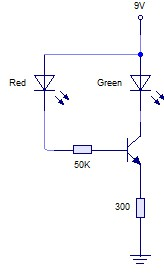

Ejercicio 1: Estado del Transistor

Enunciado: Resuelve el circuito de la figura, indicando el estado del transistor. ¿Crees que se encenderá el LED rojo?
Datos del esquema: Vcc=9V, Rb=50K, Rc=300Ω, LED rojo. β=100 (asumido).
Datos del esquema: Vcc=9V, Rb=50K, Rc=300Ω, LED rojo. β=100 (asumido).
Pizarra de Resolución - Ejercicio 1
1. Análisis del circuito
Tenemos una configuración de polarización fija con LED en el colector. Calculamos la corriente de base primero.
Vcc = Ib·Rb + Vbe
9 = Ib·50k + 0.65
Ib = (9 - 0.65) / 50000
Ib = 8.35 / 50000 = 0.167 mA
9 = Ib·50k + 0.65
Ib = (9 - 0.65) / 50000
Ib = 8.35 / 50000 = 0.167 mA
2. Corriente de colector
Ic = β · Ib = 100 · 0.167 mA = 16.7 mA
3. Voltaje en el LED y Vce
Para un LED rojo, V_LED ≈ 1.8-2.0V. Usamos 1.8V para cálculo.
Vcc = Ic·Rc + V_LED + Vce
9 = (16.7mA · 300Ω) + 1.8 + Vce
9 = 5.01 + 1.8 + Vce
Vce = 9 - 6.81 = 2.19 V
9 = (16.7mA · 300Ω) + 1.8 + Vce
9 = 5.01 + 1.8 + Vce
Vce = 9 - 6.81 = 2.19 V
4. Comprobación de estado
Como Vce = 2.19V > 0.2V, el transistor está en zona activa.
La corriente que pasa por el LED es Ic = 16.7mA, suficiente para encenderlo.
Solución Final
IB = 0.167 mA
IC = 16.7 mA
VCE = 2.19 V
Estado: ACTIVA - LED se enciende